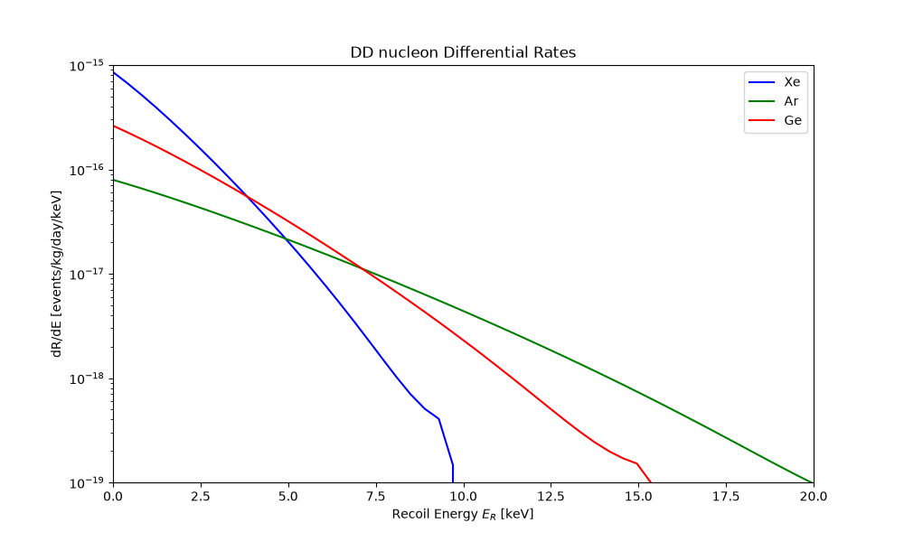
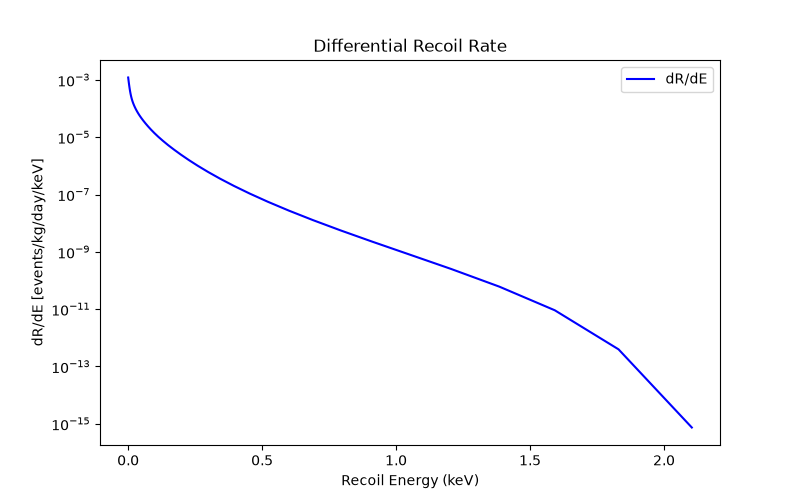
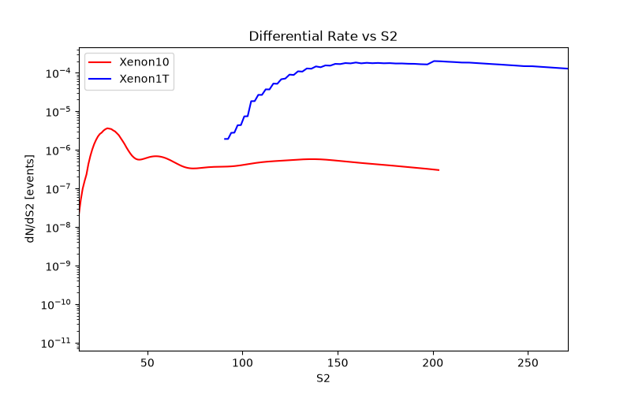

Note
Go to the end to download the full example code.
Direct Detection Tutorial#
Compute direct detection signal and limits for both nuclear and electronic recoils.
1. Nuclear Recoils with RAPIDD and LZ likelihood#
For nuclear recoil interactions, MadDM makes use of the RAPIDD module to efficiently evaluate differential recoil spectra and likelihoods. It uses the LZ experiment likelihood to place constraints on DM-nucleus interactions, while also comparing the cross section against experimental limits from Pico60.
Example with a simplified scalar-mediated DM model#
First, import the model and define the dark matter particle. Generally, for DMsimp models, you can choose between Xr (real scalar DM), Xc (complex scalar DM) and Xd (Dirac spinor DM):
MadDM> import model DMsimp_s_spin0
MadDM> define darkmatter xd
Then, generate the direct detection processes with:
MadDM> generate direct
At this point, you can set the parameter values of the model, stored in param_card_orig.dat, by pressing 1, but this can also be done when launching the process.
Next, create the process folder. In this case, we call it DD_NR_spin0, but you can choose any name you like. Then launch the process:
MadDM> output DD_NR_spin0
MadDM> launch DD_NR_spin0
Select to run the direct module (but it should be already ON) by entering:
MadDM> direct = ON
If your model has both DM-nucleon and DM-electron interactions, you can set both direct_nucleon and direct_electron modules to ON,
and you will receive results for both types of interactions considered separately.
You can set the model parameters in the param_card.dat by pressing 7, or by editing the file directly in the process folder (in this case DD_NR_spin0/Cards/param_card.dat).
You can set the MadDM parameters (such as the halo parameters, recoil energy range and much more) in the maddm_card.dat by pressing 8,
or by editing the file directly in the process folder (in this case DD_NR_spin0/Cards/maddm_card.dat).
Once you are all set, you can run the process by pressing Enter. This module will first evaluate the DM-nucleon cross section and compare it against the experimental limits from LZ and Pico60. Next, it will use RAPIDD to compute the differential nuclear recoil rates, and from those, it will evaluate the p-values using the likelihoods derived from the most recent LZ data. After running the above commands, the output will look like:
INFO: MadDM Results
INFO:
****** Direct detection [cm^2]:
INFO: SigmaN_SI_p All DM = 2.46e-47 ALLOWED LZ2024 ul = 6.48e-47
INFO: SigmaN_SI_n All DM = 2.46e-47 ALLOWED LZ2024 ul = 6.48e-47
INFO: SigmaN_SD_p All DM = 0.00e+00 ALLOWED Pico60 (2019) ul = 4.16e-41
INFO: SigmaN_SD_n All DM = 0.00e+00 ALLOWED LZ2024 ul = 7.59e-42
INFO:
INFO: Results written in: /Users/yourname/yourprocessfolder/DD_NR_spin0/output/run_01/MadDM_results.txt
quit
where All DM refers to the reference DM-electron cross section in case the DM particle contributes to the entire dark matter density of the universe.
In the second column, you can see the upper limits (ul) from the LZ2024 and Pico60 experiments, which are compared against the computed cross sections,
returning the status of the model (ALLOWED or NOT ALLOWED).
Results#
The results of each run will be stored inside the process folder you created, whose path is shown in the last line of the output.
Each time you launch the same process, MadDM creates a new folder output/run_XX within the process folder.
In this folder, you will find the cross sections in a file named MadDM_results.txt.
You can also find the differential recoil rates in the DDrates.txt file, which contains the differential recoil spectra vs energy
for DM-nucleon interactions in Xenon, Argon and Germanium targets. Below is an example of how to plot the differential rates:
import matplotlib.pyplot as plt
import numpy as np
def plot_dd_rates(dd_file):
"""
Plots direct detection rates for different materials from DDrates.txt.
Parameters:
dd_file (str): Path to the DDrates.txt file.
"""
# Lists to store data
Er_vals = []
Xe_vals = []
Ar_vals = []
Ge_vals = []
# Read the data file
with open(dd_file, 'r') as file:
for line in file:
if line.startswith('#'):
continue # skip header lines
parts = line.strip().split()
if len(parts) != 4:
continue # skip malformed lines
Er, drde_Xe, drde_Ar, drde_Ge = map(float, parts)
Er_vals.append(Er)
Xe_vals.append(drde_Xe)
Ar_vals.append(drde_Ar)
Ge_vals.append(drde_Ge)
# Convert lists to numpy arrays
Er_vals = np.array(Er_vals)
Xe_vals = np.array(Xe_vals)
Ar_vals = np.array(Ar_vals)
Ge_vals = np.array(Ge_vals)
# Plotting
plt.figure(figsize=(10, 6))
plt.plot(Er_vals, Xe_vals, label='Xe', color='blue')
plt.plot(Er_vals, Ar_vals, label='Ar', color='green')
plt.plot(Er_vals, Ge_vals, label='Ge', color='red')
plt.xlabel('Recoil Energy $E_R$ [keV]')
plt.ylabel('dR/dE [$\\mathrm{events / kg / day / keV}$]')
plt.title('DD nucleon Differential Rates')
plt.yscale('log') # y-axis in log scale
plt.xlim(0, 20)
plt.ylim(1e-19, 1e-15) # Adjust y-axis limits for better visibility
plt.legend()
plt.show()
plot_dd_rates('./plot_data/DDrates.txt')

2. Electronic Recoils with XENON10/XENON1T likelihoods#
MadDM also supports electronic recoil constraints, currently using the XENON10 and XENON1T likelihoods. These are particularly relevant for models with sub-GeV DM that interact with electrons. With this module you can compute the DM-electron recoil rates and constrain the Lagrangian parameters, or the cross section, using experimental data from XENON10 and XENON1T.
Example with a simplified scalar-mediated DM model#
First, import the model and define the dark matter particle. Generally, for DMsimp models, you can choose between Xr (real scalar DM), Xc (complex scalar DM) and Xd (Dirac spinor DM). Then, generate the direct detection processes with:
MadDM> import model eDMsimp_s_spin0
MadDM> define darkmatter xd
MadDM> generate direct
At this point, you can set the parameter values of the model, stored in param_card_orig.dat, by pressing 1, but this can also be done when launching the process.
Next, create the process folder. In this case, we call it DD_ER_spin0, but you can choose any name you like. Then launch the process:
MadDM> output DD_ER_spin0
MadDM> launch DD_ER_spin0
Select to run the direct_electron module (but it should be already ON) by entering:
MadDM> direct_electron = ON
If your model has both DM-nucleon and DM-electron interactions, you can set both direct_nucleon and direct_electron modules to ON,
and you will receive results for both types of interactions considered separately.
You can set the model parameters in the param_card.dat by pressing 7, or by editing the file directly in the process folder (in this case DD_ER_spin0/Cards/param_card.dat).
You can set the MadDM parameters (such as the halo parameters, recoil energy range and much more) in the maddm_card.dat by pressing 8,
or by editing the file directly in the process folder (in this case DD_ER_spin0/Cards/maddm_card.dat).
Note that in the direct_electron module, if the DM particle has a mass above 1 GeV, it will be ignored by default.
To change this behavior, set direct_electron_mode to always in the maddm_card.dat file, which you can do by pressing 8 after launching the process.
Once you are all set, you can run the process by pressing Enter. This module will evaluate the DM-electron recoil rates and constrain them using XENON10 + XENON1T data.
After running the above commands, the output will look like:
INFO: compilation done
INFO: MadDM Results
INFO: Sigma_e All DM = 3.23e-43 ALLOWED Xenon10 p_val = 1.00e+00
INFO: Sigma_e All DM = 3.23e-43 ALLOWED Xenon1ton p_val = 1.00e+00
INFO:
INFO: Results written in: /Users/yourname/yourprocessfolder/DD_ER_spin0/output/run_01/MadDM_results.txt
where All DM refers to the reference DM-electron cross section in case the DM particle contributes to the entire dark matter density of the universe,
ALLOWED indicates that the model is consistent with the experimental limits from XENON10 and XENON1T. You can also see the p-values for the likelihoods used in the analysis.
Results#
The results of each run will be stored inside the process folder you created, whose path is shown in the last line of the output.
Each time you launch the same process, MadDM creates a new folder output/run_XX within the process folder.
In this folder, you will find the results, such as the cross section and p-values, in a file named MadDM_results.txt.
You can find all the output produced by the Fortran module of MadDM, such as signal, background and binning, in the maddm.out file.
You can also find the differential recoil spectra vs energy or vs scintillation signal. The rates produced with this module are labeled with the suffix e_recoil at the end.
Below is an example of how to plot the differential rates and number of events vs scintillation signal for electronic recoils:
import numpy as np
import matplotlib.pyplot as plt
def plot_dRdE_er(file_path):
"""
Read and plot the dR/dE spectrum from the given file.
Parameters:
file_path (str): Path to the dRdE file.
"""
energies = []
rates = []
# Read file
with open(file_path, 'r') as file:
for line in file:
if line.startswith('#'):
continue # skip header lines
parts = line.strip().split()
if len(parts) != 3:
continue # skip malformed lines
# Extract Energy and dR/dE
energy = float(parts[1]) # second column: Energy (keV)
rate = float(parts[2]) # third column: dR/dE
energies.append(energy)
rates.append(rate)
energies = np.array(energies)
rates = np.array(rates)
# Apply mask to exclude points with rate <= 0 (if any)
mask = rates > 0
energies = energies[mask]
rates = rates[mask]
# Plot
plt.figure(figsize=(8, 5))
plt.plot(energies, rates, linestyle='-', color='b', label='dR/dE')
plt.yscale('log')
plt.xlabel("Recoil Energy (keV)")
plt.ylabel("dR/dE [events/kg/day/keV]")
plt.title("Differential Recoil Rate")
plt.legend()
plt.show()
plot_dRdE_er('./plot_data/dRdE_e_recoil.dat')

Plot the number of events vs scintillation signal for Electronic Recoils
import numpy as np
import matplotlib.pyplot as plt
def plot_dRdS2_er(file_path):
"""
Read and plot the dR/dS2 spectra from Xenon10 and Xenon1T files.
"""
# Xenon10
s2_vals_10 = []
rates_10 = []
with open(file_path, 'r') as file:
for line in file:
if line.startswith('#'):
continue
parts = line.strip().split()
if len(parts) != 2:
continue
s2 = float(parts[0])
rate = float(parts[1])
s2_vals_10.append(s2)
rates_10.append(rate)
s2_vals_10 = np.array(s2_vals_10)
rates_10 = np.array(rates_10)
mask_10 = rates_10 > 0
s2_vals_10 = s2_vals_10[mask_10]
rates_10 = rates_10[mask_10]
# Xenon1T
s2_vals_1t = []
rates_1t = []
with open("./plot_data/dRdS2_Xenon1T_e_recoil.dat", 'r') as file:
for line in file:
if line.startswith('#'):
continue
parts = line.strip().split()
if len(parts) != 2:
continue
s2 = float(parts[0])
rate = float(parts[1])
s2_vals_1t.append(s2)
rates_1t.append(rate)
s2_vals_1t = np.array(s2_vals_1t)
rates_1t = np.array(rates_1t)
mask_1t = rates_1t > 0
s2_vals_1t = s2_vals_1t[mask_1t]
rates_1t = rates_1t[mask_1t]
# Plot
plt.figure(figsize=(8, 5))
plt.plot(s2_vals_10, rates_10, linestyle='-', color='red', label='Xenon10')
plt.plot(s2_vals_1t, rates_1t, linestyle='-', color='blue', label='Xenon1T')
plt.yscale('log')
plt.xlabel("S2")
plt.ylabel("dN/dS2 [events]")
plt.xlim(14, 271)
plt.title("Differential Rate vs S2")
plt.legend()
plt.show()
plot_dRdS2_er("./plot_data/dRdS2_Xenon10_e_recoil.dat")

Exiting MadDM#
MadDM> quit
Total running time of the script: (0 minutes 0.328 seconds)